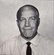

About Streng Bros. Homes
BILL AND JIM STRENG - BUILDERS
Brothers Bill and Jim Streng, working primarily with architect Carter Sparks, built over 3,800 homes in the greater Sacramento area over a 30 year period.
The predominately modern homes were extremely
popular with educators, lawyers, and especially architects. Featuring exposed beams, walls of glass, and high ceilings, most of the homes were sold before they were built and located in approximately 40 subdivisions
and on individual lots. Some Streng subdivisions included more affordable half-plex models along with their single detached counterparts.
With their partnership with Carter Sparks, the Streng
Bros. brought a modernist vision to the Sacramento region that is both admired and coveted to this day.
Via [ 60 years of Streng Bros Homes | 2019 Sacramento Mid-Century Modern Home Tour ] SacMod 2019
Bill and Jim Streng grew up in Scranton, Pennsylvania, and studied at Dartmouth.
At age 16, Jim began his building career early after being invited to work in Sacramento by his uncle, Phil Heraty, a regional contractor.
Jim continued his work in Sacramento during the summers that followed.
In 1957, when Heraty retired, Bill and Jim took over his Sacramento business, and formed Streng Bros. Homes.
Jim Streng estimates
that he and his brother, Bill, sold approximately 3,800 homes over the course of 30 years in Yolo, Sacramento and Placer counties. This number is based upon a rough calculation of the number of homes, on average, they
built per year. At first, the Strengs built conventional ranch homes like their uncle, but soon decided to switch production to modern homes in order to distinguish themselves from other builders. Their modern
(known as “contemporary” at the time) homes were designed by architect Carter Sparks, whom Jim and Mary Jo Streng first met at a parenting class in 1958, along with Sparks’ wife, Billie. At first, Sparks declined to
design homes for the Streng brothers — but eventually changed his mind.
Sixty years ago, in 1959, Sparks designed the first Streng Bros. Home: Model 601, or the “Carter Classic,” as the Strengs called it. It
offered a flexible plan, including three or four bedrooms and a living area that merged the dining room, living room, and kitchen. A variety of roof lines and elevations provided diverse but unified options while being
grounded around the same basic plan. 4313 Jan Drive, in Carmichael’s Barrett Hills neighborhood, was the first 601 plan home to be completed. An ad in the Sacramento Bee on March 27, 1960 announced its arrival.
Sparks’
designs for the Streng Bros. included a huge variety of styles from which to choose: houses with carports, garages, pitched roofs, flat roofs, pop-tops,two-story homes with balconies and loft spaces, pyramids, homes
with indoor atriums capped with eight foot domed skylights with tinted acrylic, Sea Ranch style wedges, duplexes, and halfplex models in different shapes and configurations.
The Streng Bros. pre-sold homes (before
they were built) and, to avoid monotony and uniformity, models could be reversed and otherwise modified and customized according to the buyers’ wishes. The use of stock plans that were FHA-approved made them even more
affordable. While a small percentage of homes were built on the customer’s own lot, the majority of them were built over time in subdivisions developed by the Strengs.
Interiors for the first model home (and
many subdivision model homes over the years thereafter) were by designer Jon Siler; later subdivision model interiors were done by Miles Treaster. Jim and Bill worked hard—often six days a week—and always used the model
home as their office. A 2011 report by Caltrans regarding the history of mid-century era tract homes identified Streng Bros. Homes as one of the “nine most important merchant builders in California during the 30 years
that followed World War II.”
CARTER SPARKS - ARCHITECT
While the Streng Bros. built the homes, UC Berkeley graduate Carter Sparks designed most of the Streng homes around the Sacramento region.
Having trained with Eichler architects Ashen and Allen, Sparks established himself in Sacramento to focus mainly on custom homes for clients.
Although there are exceptional custom Carter Sparks
homes throughout the valley, his best known homes are the mass-produced ones, such as the popular Atrium and the contemporary "Carter Classic" models, he designed for Streng Bros.
Homes.
Via [ 60 years of Streng Bros Homes | 2019 Sacramento Mid-Century Modern Home Tour ] SacMod 2019
Carter Sparks is one of Sacramento’s most widely-recognized, beloved, and celebrated architects. While his designs for Streng Bros. Homes remain his largest body of work, Sparks also designed commercial and civic buildings,
along with dozens of custom homes for individual clients. These one-of-a-kind homes ranged from modest, low-slung concrete block and plywood structures, to expressionist forms employing hyperbolic roofs and complex
beam patterns, to larger redwood and glass cathedrals.
Sparks grew up in Klamath Falls, Oregon, and studied engineering at Oregon State University. His studies were interrupted by WWII to serve as an ensign air navigator for the Navy. He resumed his studies after the war, and
earned a Bachelor of Arts in Architecture from UC Berkeley in 1950. Sparks worked as a draftsman for two architectural firms in San Francisco: first for Anshen and Allen — who, at that time were designing homes for
Joseph Eichler — and later with Mario Corbett. In Sacramento, he worked as a designer with Gordon Stafford. After earning his state license, Sparks opened his own firm in 1954. He partnered with Donald Thaden for
a few years, but primarily worked as a sole practitioner.
Sparks’ Design Philosophy
Sparks was particularly inspired by Frank Lloyd Wright, and admired how Wright’s structures blended
with their surroundings and embraced nature’s forces and elements. Like Wright, many of Sparks’ custom homes often included site-specific furniture and light fixtures. Sparks’ designs incorporated large expanses of
glass, wood, rock, and other natural materials; he sought to create homes which “were honest and had integrity.”
He was a charismatic individual, and ardent believer that an architect’s design should be based
on extended study of clients’ wants, needs, and personality. As such, he intensely observed his clients’ preferences and behaviors, and asserted “… a house should reflect who you are. The more unique the person is,
the more unique the house can be.” As a result, Sparks’ clients often became some of his closest friends. He especially loved children, as demonstrated in his design of a home for a local children’s charity. On another
project, he included a secret room behind the children’s closets.
His designs for Streng Bros. Homes demonstrated a commitment to affordability without compromising quality, and the accessibility of good design
to all. The following statement was attributed to Sparks in a Streng Bros Homes brochure:
“These homes express my solution for contemporary living in Sacramento Valley. I have included broad overhanging eaves for shade, and open planning to create and easy flow between interior and exterior spaces. The use of natural materials unifies the homes with their surroundings. When these elements are combined, they form a pleasant blend of function and beauty that results in a better home in which to live.”
Sparks
loved living in the Clarksburg countryside near the Sacramento River while still being close enough to town to enjoy urban life. He remained humble about his work, which to him was both an art and a lifestyle.
To learn more about Carter Sparks' work: Carter Sparks Archive